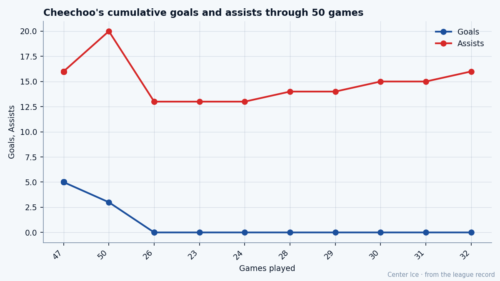

A Trophy on the Shelf: what the Selke did to Jonathan Cheechoo
Three goals in 50 games. Eighty-one checking. A contract that dies in July. The Selke winner from Moose Factory is the cheapest man on a playoff team who cannot find the net.
 Tomáš VránaProfile writer · The Sweater
Tomáš VránaProfile writer · The Sweater Jonathan Cheechoo72 has 3 goals in 50 games. He won the Selke Trophy last season.
Jonathan Cheechoo72 has 3 goals in 50 games. He won the Selke Trophy last season.
He sits in Edmonton's room, 22 wins deep in a playoff season, morale at 97, $0.70M on a contract that ends in July. The Book has him at 70. Checking 81, shoot power 80. The goals are not coming, and the room does not seem to mind.
The road from Moose Factory
Cheechoo grew up in Moose Factory, Ontario, a town at the bottom of James Bay where the winter ice holds until June. He went to Belleville in the OHL, scored 76 points in 64 games as a rookie in 1997-98, and by the spring of 1998 most drafts had him going late. San Jose traded back from second overall to 29th to take him, and the criticism was immediate. One line that stuck: he skated slower forward than most players skated backward.
The Book disagrees. Speed reads 75, acceleration 72. Not fast, but not the player the mock drafts dropped to 29th either. He scored 82 points in 63 OHL games the season after that draft, added 30 more in 21 playoff games, and buried five in Game 7 of the OHL Final against London. The Bulls won 9-2. Nobody in Belleville talked about his skating.
His best junior year came the season after that: 91 points in 66 games, a team lead, and 17 more in 16 playoff games. He never played a full junior season because of injuries from his crash-and-bang style. San Jose's AHL affiliate in Kentucky took him for 2000-01, and the climb from there to the league took three more years.
What the Selke season was
Last year Cheechoo played 81 games for San Jose and put up 47 points. In the playoffs he had 10 points in 17 games as Calgary eliminated the Sharks. The Selke is the award for the best defensive forward, and at 81 checking and 78 aggression, the voters looked at a man who made lives miserable for other teams' top lines and gave him the trophy.

This winter, three goals
This season the assists are steady. Twenty in 50 games. The goals arrived in a stretch between game 33 and game 41, three in nine games, and then stopped. Nine games without a goal heading into late January. His 23 points in 50 games sit well under last season's 47 in 81.
The penalty minutes climbed from 12 to 25. Ice time dropped from 20.7 minutes a night to 19.3. He is playing a harder game and getting fewer minutes, which is the shape of a forward whose team does not need him to score because the men above him do it for free.
 Edmonton Oilers has
Edmonton Oilers has  Ryan Smyth82 at 79 overall,
Ryan Smyth82 at 79 overall,  Mike Comrie80 at 78 with 76 points, and
Mike Comrie80 at 78 with 76 points, and  Radek Dvorak80 at 75. The Oilers sit at 22-14-5, 67 points, in the Northwest. They score 180 and allow 183, an even goal differential, grinding out wins on depth rather than one man's hands. Cheechoo is the third right wing on a room that needs checking more than it needs 30 goals from him.
Radek Dvorak80 at 75. The Oilers sit at 22-14-5, 67 points, in the Northwest. They score 180 and allow 183, an even goal differential, grinding out wins on depth rather than one man's hands. Cheechoo is the third right wing on a room that needs checking more than it needs 30 goals from him.
The grades and the gap
The Book puts his overall at 70, with the Development Index reading flat at 0. His base grade on the Index is 79. His potential is 85. He is 24.
The attributes tell the story in two columns. Strong: checking 81, shoot power 80, hero 79, aggression 78, speed 75, toughness 75. Weak: endurance 50, faceoffs 50, fighting 51. A man with a 50 endurance grade cannot sustain an 82-game season at 20 minutes a night. The 19.3 he gets now is closer to what his body can carry than the 20.7 he drew last spring.
The crash-and-bang style that took full junior seasons away from him in Belleville now takes his third period. The first 30 games found him at zero. The burst between 33 and 41 was his body still fresh enough to attack the net. After game 41, the legs went and the goals stopped.
Playing for July
$0.70M for one more year. The cheapest contract on a team with a Selke Trophy in the building. Edmonton has $36.81M committed this season. Cheechoo costs 1.9 percent of it. The Bureau has his potential at 85. He is 24. The room around him is good enough to keep him in the playoffs, and good enough to make sure he never has to carry a line.
A man at 97 morale is not complaining about his role. He is a Selke winner in a $0.70M sweater on a team with 67 points. The trade deadline is 48 days away. Nobody in Edmonton is shopping a trophy winner for $0.70M when the salary structure is this light.
But the goals matter. A Selke winner with 3 goals in 50 games who reaches July unsigned becomes a different conversation. At 24, with a potential of 85 and a base grade of 79, the room that has him next season will ask for 20 goals. The last 30 games are where those goals go missing, and that is not something this room can fix for him.